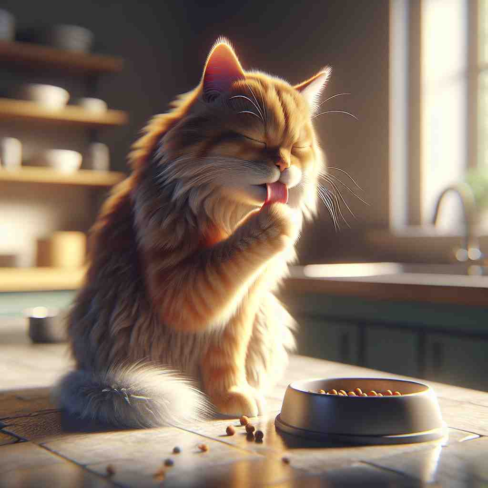

💬 The cat itself is very happy while eating. 猫自己吃东西的时候非常开心。

💬 The ghost itself is coming out of the old door. 鬼魂正从旧门中走出。
💬 The cat itself is very happy while eating. 猫自己吃东西的时候非常开心。
💬 The ghost itself is coming out of the old door. 鬼魂正从旧门中走出。
🔈 [ɪt'self]
💬 The cat cleaned itself. 猫自己清理自己。
🔍 自己: 小猫用舌头舔自己的毛，把自己弄干净。就像你早上起来自己刷牙洗脸，而不是妈妈帮你刷牙洗脸。
💬 The door closed by itself. 门自己关上了。
🔍 自己: 一阵风吹过，门就自动关上了，没有人去碰它。就像你把玩具车放在地上，它自己向前滑行，你没有推它。
💬 The problem solved itself. 问题自己解决了。
🔍 自己: 你本来很担心玩具坏了，但过了一会儿，玩具又可以玩了，你没有修理它。就像你本来不会做的数学题，后来你又仔细想了一遍，自己就明白了，没有人教你。
🧠 'itself' 指的是某物自己，没有其他东西或人的参与。
⬅️ himself（他自己）、herself（她自己）、myself（我自己）：这些词都表示自己，但 'itself' 指的是事物本身，而不是人。
🔀 by others（被其他人）、with help（在帮助下）：'itself' 强调的是没有外力的作用，而 'by others' 和 'with help' 则表示有其他人的参与。
🌳 由代词 "it"（它、它自己）和强调反身的后缀 "self" 组成，表示强调某事物本身。
💡 记忆 "itself" 时，可以联想到 "it + self"，即“它自己”的概念，这个词强调事物的本身而非其他方面。通过将代词和反身后缀合并，更容易理解。
🗝️ pron. used to emphasize the subject of a sentence 用于强调句子的主语
🎭 在一场盛大的音乐会上，舞台中央的钢琴家正全神贯注地表演。灯光聚焦在她自己(itself)身上，让她成为全场瞩目的焦点。
💬 The book itself is not expensive. 这本书本身并不贵。
🤔 从核心含义延伸，强调主语本身
🗝️ pron. used to mean 'by itself' or 'without help' 用于表示“自身”或“没有帮助”
🎭 在一个静谧的花园里，一朵玫瑰正努力地挣脱花苞，以展现自己本身(itself)的美丽，丝毫没有外界的帮助。
💬 The door closed itself. 门自己关上了。
🤔 强调主语独立完成动作，不需外力
🗝️ pron. used to refer to a situation or idea just mentioned 用于指代刚才提到的情况或想法
🎭 在一个哲学课堂上，教授刚刚提出一个复杂的思维实验。学生们沉思半晌后，有一个学生问道："这个想法本身(itself)是什么意思？"
💬 The idea itself is good, but the execution is poor. 这个想法本身很好，但执行得很差。
🤔 指代前文提到的情况或想法
🗝️ adv. in its natural or usual state 处于自然或通常状态
🎭 在一个家庭聚会上，看到厨房里妈妈自己(itself)忙碌的身影，大家感到温馨又熟悉，因为这反映了她最自然的样子。
💬 We enjoyed nature itself during our camping trip. 我们在露营旅行中享受了大自然本身。
🤔 强调事物的本来面目或自然状态